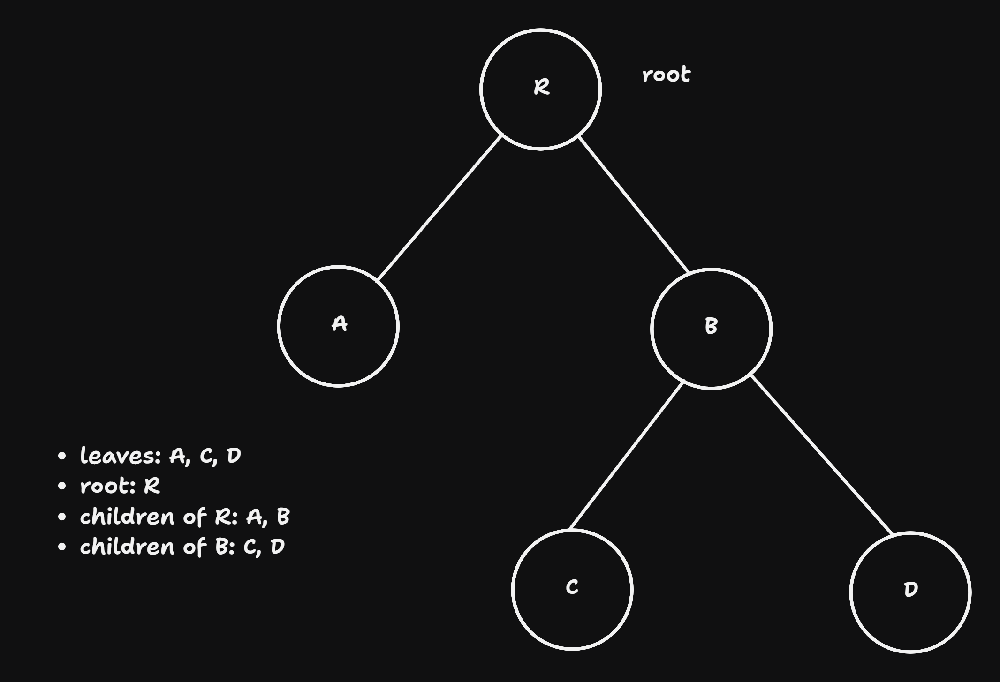

def binary_search_impl(a, key, start, end):
size = end - start
if size < 0 : return None # not found
center = (start + end) // 2
if a[center] == key: return center
if a[center] < key: return binary_search_impl(a, key, center + 1, end)
else : return binary_search_impl(a, key, start, center - 1)Week 8
VL 15 - 03.06.25
Complexity (cont.)
wenn \(f(n) in \mathcal{O}(g(N))\) dann gilt fuer die meisten ’interessanten” der Verschiebungsregel \(f(N + k) \in \mathcal{O}(g(N))\) genau dann, wenn \(f(N + k) \leq b^k \cdot f(N)\) fuer konstante \(b\) und \(N \geq N_k\) gilt.
proof:
Examples:
- \(f(N) = N^D\) for \(D > 0\) (i.e. Monome, roots, …) \(f(N + k) = (N + k)^D \leq (2N)^D = 2^D\cdot N^D = 2^D\cdot f(N)\), (here we set \(N \geq k\))
- \(f(N) = \log_a N\) \(\Rightarrow\) \(f(N + k) = \log_a (N + k) = \log_a N \cdot (1 + \frac{k}{N}) \leq ...\)
- \(f(N) = a^N \Rightarrow f(N + k) - a^{N + k} = a^k \cdot a^N \rightarrow b = a\)
Basically for these functions the shifting N -> N + k doesn’t change the complexity class, (algorihtm will still run longer though)
Complexity of Recursive Algorithms
Runtime: \(T(N) = T_{\text{local}}(N) + \sum_{i} T_{\text{recursive}}(N_i)\)
Two solution methods:
recursively substitute the definition of the formula within the sub formulas, until a simpler expression is reached. Even though this might be mathematically not exact it usually allows to guess a formula.
master theorem:
master theorem can be applied when:
\[T(N) = T_{\text{local}}(N) + a \cdot T_{\text{recursive}}(N / b)\]
i.e. \(a\) recursive calls with smaller inputs: \(\frac{N}{b}\)
recursions exponent: \(\rho = \log_b a\)
three cases:
\(T_{\text{local}}(N) \in \mathcal{O}(N^{\rho - \epsilon}\), for \(\epsilon > 0\). Here the local computation is a little faster than \(N^{\rho}\). Then the complexity
\[T(N) \in \Theta(N^{\rho})\]
\(T_{\text{local}}(N) \in \Theta(N^{\rho})\). Local computation as fast as \(N^{\rho}\). Complexity:
\[T(N) \in \Theta(N^{\rho} \log N)\]
\(T_{\text{local}}(N) \in \Omega(N^{\rho + \epsilon})\), for \(\epsilon > 0\) and \(a\cdot T_{\text{local}}(\frac{N}{b}) \leq c \cdot T_{\text{local}}(N)\), s.t. \(c \leq 1\). then local computations dominate and we have:
\[T(N) \in \Theta(T_{\text{local}}(N))\]
Searching
- the most important quality criteria of a large DB is a powerful search function
- fundamnetal search types:
- key search ()
- range search: keys are in an interval
- similarity search: finds elements whose keys are similar to the given key \(\Rightarrow\)
- correcting typing mistakes like google does it
- content-based search (?)
- Graph search: shortest path (navigation)
Key search
Sequential search
when there is no order, the elements are not order by key
advantages:
- no requirements of specifications how the data should be stored
- the keys must only support “
==” and don’t have to support<=.
disadvantages: slow, \(\mathcal{O}(N)\).
general implementation:
def sequential_search(a, target_key, key_function): for i in ragen(len(a)): if key_function(a[i]) == target_key: return i # or return a[i] return None # not foundto simplify, we will omit the explicit usage of
key_function. Then the elements themselves are the keys. But in practice usually a key function is necessary, since elements are objects or structures.The simplified version:
def sequential_search(a, target_key): for i in range(len(a)): if a[i] == target_key: return i return NoneWe want faster searching
Faster Searching Algorithms
- to have faster searching we need more information about the keys - they should support more than
==,<=(total Order): binary search, \(\mathcal{O}(\log N)\)- hash-function: hashtable, \(\mathcal{O}(1)\)
- quantize-function: bucketarray, \(\mathcal{O}(1)\) (or Bucket sort)
Binary Search
Data are in a sorted array. We need a < function.
a = [...] # define an unsorted array
a.sort()
found = binary_search(a, key) implementation:
def binary_search(a, key): return binary_search_impl(a, key, 0, len(a)) # divide and conquera = [2, 1, -3, 4] a.sort() binary_search(a, 1)1
Binary Search Iterative
- implementation:
def binary_search_it_impl(a, key, begin, end):
size = end - begin
center = (begin + end) // 2
# invariant: key possibly in a[begin : end]
while size != 0 :
if a[center] == key: return center
if key > a[center]: begin = center + 1
if key < a[center]: end = center
center = (begin + end) // 2
size = end - begin
# size == 0
return None
def binary_search_it(a, key):
return binary_search_it_impl(a, key, 0, len(a))
print(a)
print(binary_search_it([3, 4], 4))[-3, 1, 2, 4]
1- complexity analsysi - we apply the master theorem: \(T(N) = T_{\text{local}}(N) + a T_{\text{recursive}}(\frac{N}{2})\). Then we have:
- \(T_l = O(1)\)
- \(a = 1\)
- \(b = 2\)
- \(\rho = \log_2 1 = 0 \Rightarrow L_ ...\)
VL 16 - 05.06.25
Sorting is O(nlog(n)), sequential searching of unsorted structures is O(n), which is faster. Binary search is O(log(n)) and hash table search is O(1). Binary search must be performed on a sorted structure. So if we were to resort every time we insert an element it would be less effective than sequential searching. Therefore we need a better way to keep the data structure sorted \(\Rightarrow\) Search trees
Search Trees
- Goal: inserting, removing, sorting all O(log(N))
- Def:
- Graph:
- nodes: data elements
- edges: connections
- path: a sequence of nodes where each node in the sequence are connected by an edge.
- Tree:: any arbitrary pair of nodes are connected with a unique path. In such graphs there are no cycles.
- Root: an arbitrarily selected node.
- Graph:
Tree Data Structure

- Binary Tree: a node has at most three neighbors
- parent: every node other than the root node (that was chosen arbitrarily) has a unique parent
- child: every node other than the leave nodes have children
- leaf: nodes that don’t have children
- interior node:
- sub-tree: in a binary tree the sub-trees get exponentially smaller (each time they are halved).
Implementation
class Node:
def __init__(self, key, value):
self.key = key
self.value = value
self.left = self.right = None # a node is initially a leafExample construction of a tree (to simplify we omit value, i.e. keys are values themselves):
root = Node("R")
root.left = Node("A")
root.right = Node("B")
root.right.left = Node("C")
root.right.right = Node("D")- binary tree \(\Rightarrow\) binary search Tree when Search tree conditions are satisfied. Search tree conditions:
- keys are totally ordered
- for each node holds:
- all the nodes in the left substree are smaller or equal
- all the nodes in right substree are greater
- tree search: recursively:
- if the
target_keyis greater than the ucrrent node: search in right subtree - otherwise search in the left subtree
- if the
implementation:
def tree_serch(node, target_key):
if node is None: return None
if node.key == target_key: return node
if target_key < node.key: return tree_search(node.left, target_key)
else return tree_search(node.right, target_key)The tree should be maintained s.t. the search tree condition is always true and the tree is balanced. If the tree is not balanced it deteriorates to a linear search.
Insertion: Elements should be inserted s.t. the search tree condition is always satisfied.
- if target key larger / smaller then current key: insert in right / left subtree
- what to do when the key is already there?
- option1: raise error (not a good solution)
- overwrite the data value with the new data value (this is what’s done in arrays anyways. )
Implementation:
def tree_insert(node, key, value): if node is None: return Node(key, value) if node.key == key: node.value = value # return value return node if key < node.key: node.left = tree_insert(node.left, key, value) else: node.right = tree_inssert(node.right, key, value) return nodebad sequnces of insertions cna cause a tree to detoriarete to a linked list:
# good sequence
root = None
root = tree_insert(root, 4)
root = tree_insert(root, 2)
root = tree_insert(root, 3)
root = tree_insert(root, 3)
root = tree_insert(root, 6)
# bad sequence: 2, 3, 4, 6- Deletion: deletion should preserve the search condition:
- case 0: key doesn’t exist: raise error or don’t do anything
- case 1: key is a leaf: remove the leaf (set it to None)
- case 2: node has a single child: replace the none
- case 3: node has two children (difficult case)
- search for neighbors (predeccessor or successor) of the node in the order and replace it
- remove the neighbors of its children form the prefvious posisiont
# hilfsfunction for predecossor
def tree_predecessor(node):
node = node.left
while node right is not None:
node = node.right
return node
def tree_remove(node, key):
if node is None: return None # 0th case
if key < node.key: node.left = tree_remove(node.left, key) #
elif key > node.key: node.right = tree_remove(node.right, key)
else: # key == node.key
if node.left is None and node.right is None: return None # 1st case
if node.left is None: return node.right
if node.right is None: return node.left
pred = tree_predecessor(node)
node.key = pred.key; node.value = pred.value # copy the predecessor
node.left = tree_remove(node.left, pred.key) # remove old predecessor
return node